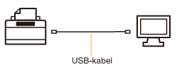
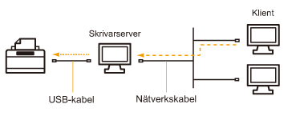

Skrivardrivrutinen är ett program som behövs för att skriva ut på skrivaren.
 |
Se "Systemkrav för utskrift" för information om vilken systemmiljö som krävs för att använda skrivardrivrutinen.
|
|
|
Proceduren för hur skrivardrivrutinen installeras varierar mellan olika systemmiljöer. Följ nedanstående anvisningar beroende på systemmiljö.
Om du har anslutit skrivaren och datorn med en USB-kabel

Du kan installera skrivardrivrutinen på följande två sätt.
<Enkel installation>
Installera skrivardrivrutinen från den medföljande CD-ROM (installationsskivan). e-handboken installeras samtidigt.
<Plug and Play>
Detektera skrivaren med Plug and Play och installera skrivarens drivrutin genom att välja den manuellt från den medföljande CD-ROM.
Om du använder skrivaren i en skrivarservermiljö

Om din dator fungerar som skrivarserver
Mer information om hur man installerar skrivardrivrutinen finns i "Om du har anslutit skrivaren och datorn med en USB-kabel" ovan.
|
|
Konfigurera skrivarservern när installationen är klar.
|
Om din dator fungerar som klientdator
Du kan installera skrivardrivrutinen på följande två sätt.
<Lokal installation>
Du kan installera skrivardrivrutinen med den medföljande CD-ROM.
<Nedladdad installation>
Du kan installera skrivardrivrutinen utan att använda den medföljande CD-ROM-skivan och istället ladda ned skrivardrivrutinen från skrivarservern. Drivrutinen kan laddas ned och installeras på följande två sätt.